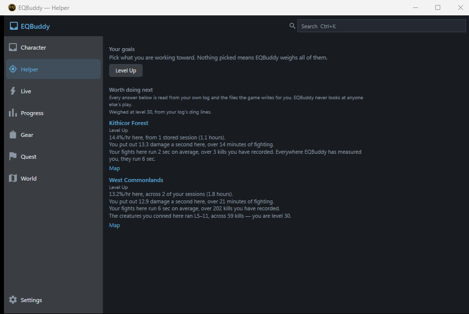
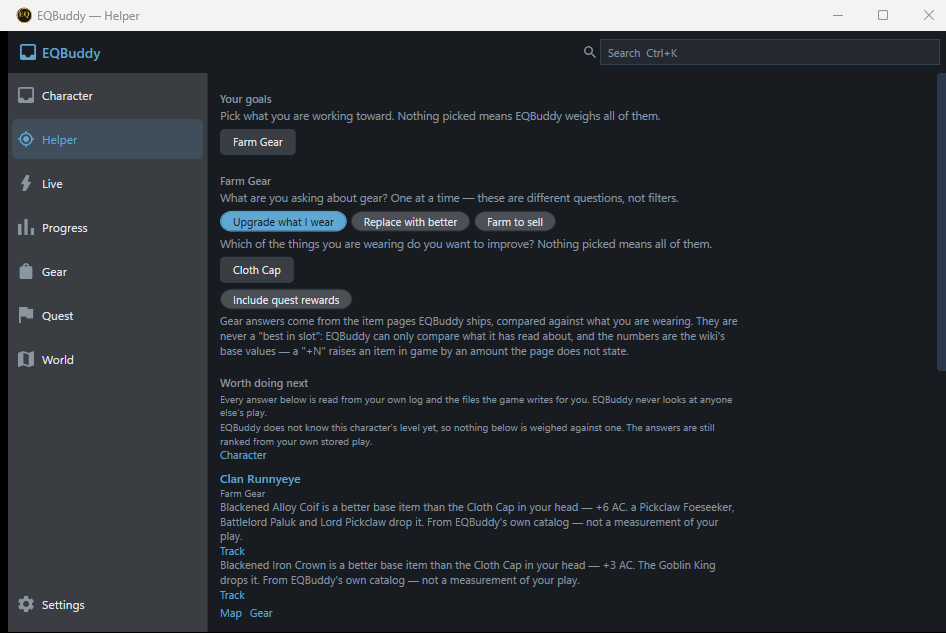

EQBuddy Evolved
Your personalized guide to Norrath
Know what to do next. EQBuddy tracks your fights, quests, gear, camps and loot — then connects them into guidance learned from your own play.
Free · Windows · Local-first · No account required

What can EQBuddy help me do?
Every capture and clip on this page is a real Evolved build driven by the repo’s own harness — character names are test fixtures.

“What should I do in Plane of Sky?”
One step pinned as NEXT, naming who, where and what. Loot in your log ticks the checklist by itself.

“How do I upgrade this?”
Starts from what you are wearing, and names the creature and the zone that drop something better.

“Where should I hunt?”
Every camp you sit is measured — kills, drops, rates. The Helper ranks zones from that evidence, and marks one down once you have outgrown it.

“When will it spawn?”
Timers learned from your own kills, counting down beside the map.
Built for playing, not managing software
While you play, the whole app is one thin tray of the numbers you chose. Everything deeper is one gesture away.


Your character. Your history. Your guide.
Not a generic “best in slot” list. EQBuddy learns from your own play and connects it into one path.
Which upgrades are meaningful for what you are wearing now.
Which quest provides it, and what you are already able to turn in.
Which creature drops it — and whether your own fight history says the content suits you.
Spawn timers learned from your kills, on the map where you saw them.
How many zones away a quest's turn-in is, and the path there.
The more you play, the more of that path is yours.


On your desktop, and on the phone you look away to — LAN-only, optional, no account.
Built differently
Private by design
Local-first. No account, and nothing sent off your PC unless you opt in.
Safe for EQ
Reads only what the game writes for you: your /log, and the /outputfile dumps you ask for — inventory, achievements, faction, spellbook. No game-memory reads, no automation, no injection.
Personal, not competitive
It measures only you — never a way to judge other players.
Evidence over guesses
Numbers from your own kills say so, and estimates are marked as estimates.